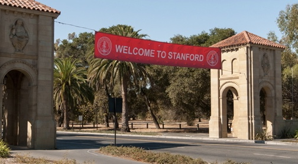
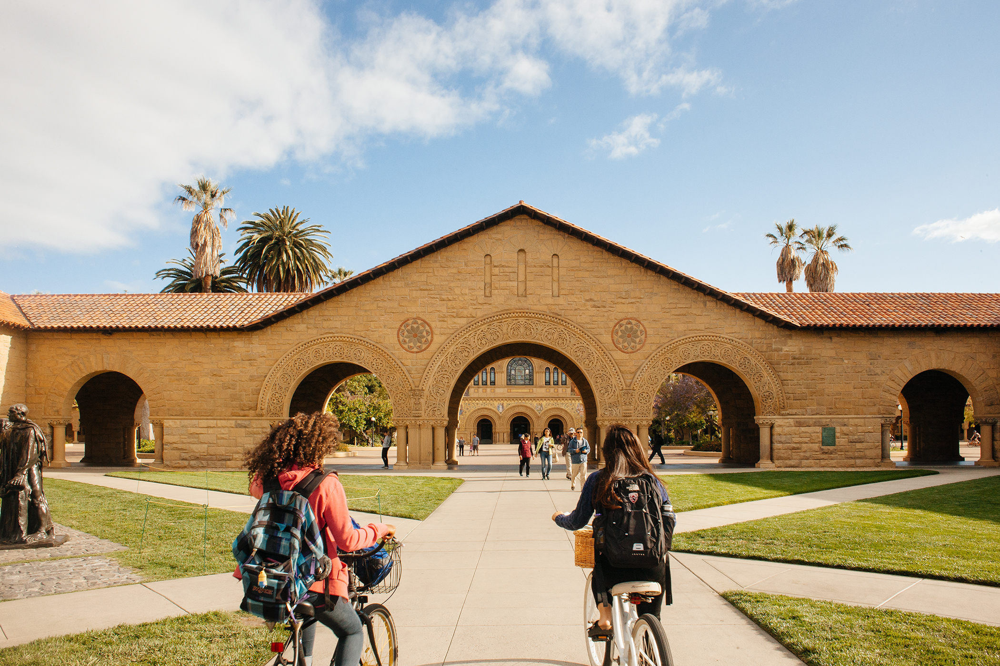
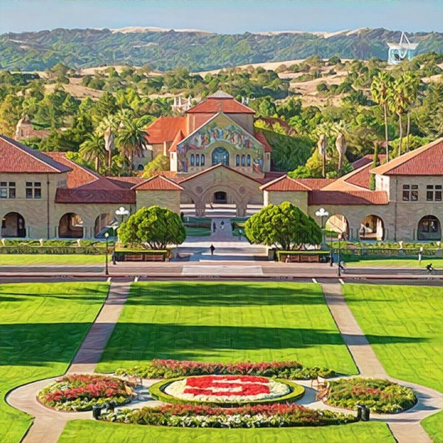

Educacion Superior
Universidad de Stanford
La Universidad Leland Stanford Junior (Leland Stanford Junior University en inglés), conocida como Universidad Stanford, es una universidad privada estadounidense ubicada en Stanford, California, a unos 56 km al sureste de San Francisco. Stanford es célebre por la calidad de su enseñanza, por su riqueza y su proximidad a Silicon Valley, cuna de algunas de las más importantes empresas de tecnología punta. Es considerada por todos los listados como una de las diez mejores universidades del mundo

La universidad fue fundada en 1885 por Leland Stanford y su esposa Jane en memoria de su único hijo, Leland Stanford Jr., que había fallecido de fiebres tifoideas a la edad de quince años. El fundador, un rico magnate de los ferrocarriles, era senador y había ejercido como gobernador del estado de California. La universidad abrió sus puertas el 1 de octubre de 18916 como una institución coeducacional y aconfesional.

La institución sufrió dificultades financieras tras la muerte de su fundador en 1893 y también después del devastador terremoto de San Francisco de 1906,7 que destruyó gran parte de su campus. Después de la Segunda Guerra Mundial, el preboste Frederick Terman apoyó el espíritu empresarial de sus profesores y graduados para construir una industria local autosuficiente en lo que después sería conocido como Silicon Valley.8 La universidad también es una de las instituciones que más dinero recauda de todo Estados Unidos y se convirtió en la primera en ingresar más de mil millones de dólares en solo un año
